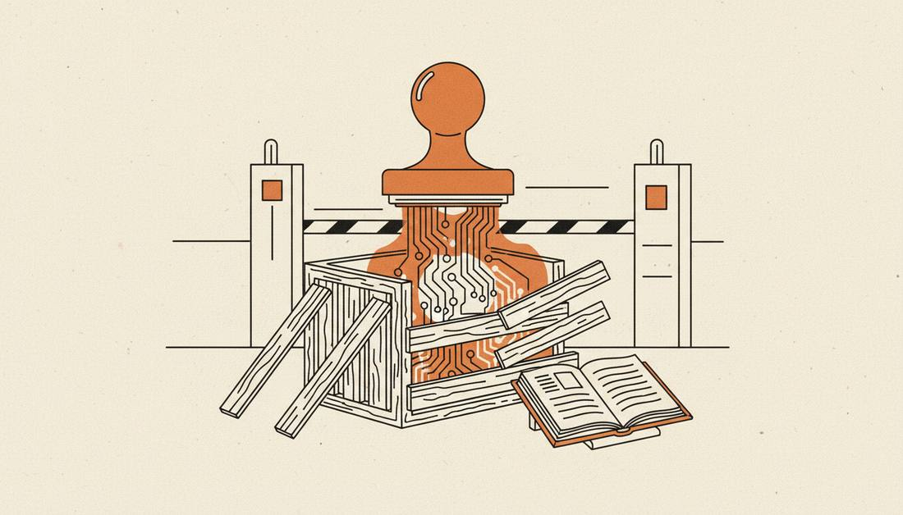

China Draws an Export Line Around 23 AI Technologies
Announcement No. 48 of 2026, issued jointly by the Ministry of Commerce and the Ministry of Science and Technology, proposes adding 40 technologies to the Catalogue of Technologies Prohibited or Restricted from Export: 23 in AI, five in biomedicine and 12 in photovoltaics. The comment period runs from October 16 to November 15, and temporary export pre-registration requirements took effect on the date of release.

- 01THE NOTICE — On October 16, Announcement No. 48 was released: 40 technologies proposed for the catalogue, comments open until November 15.
- 02THE LIST — Of the 23 AI items, six are proposed for prohibition and 17 for restriction, with thresholds spanning parameters, compute and evaluation rankings.
- 03THE CARVE-OUTS — Already open-sourced or published technology is excluded; API, SaaS and app access do not count as technology exports.
WHAT HAPPENEDWhat Happened
Of the 23 AI technologies, six are proposed for prohibition and 17 for restriction. Restriction thresholds include training compute of 10^26 floating-point operations, 2 trillion parameters, and a top-ten ranking in global mainstream evaluations; agents are limited by numbers of decomposed subtasks, concurrent collaborating agents and connected tools. Technologies already open-sourced or published in papers fall outside the controls, and calling models from abroad via API, website, app or SaaS does not count as a technology export.
What is genuinely controlled is physical transfer: weights, checkpoints, source code, architecture and training and inference acceleration technology leaving the country require a licence, and deploying a restricted model overseas constitutes an export act. A company's own overseas cloud deployment can use the automatic licensing channel — but at the negotiating table, the distinction between access and transfer must be settled first.
THE LINEOne line separating two kinds of business
The most important division in this catalogue is not in the technology list but in the Ministry of Commerce's explanatory line: calling from abroad is not an export; deploying abroad is. APIs, SaaS and lightweight on-device deployment are excluded; weights leaving the country and local deployment overseas are included.
That division directly rewrites the overseas playbook for Chinese models: selling services can continue; selling technology requires paperwork first. What overseas customers buy may be the same model with a different legal identity.
THE THRESHOLD GAMEThe more specific the thresholds, the narrower the arbitrage
2 trillion parameters, 10^26 compute, a top-ten evaluation ranking — triggering any one of the three thresholds brings a model under restriction. The agent thresholds are equally quantified: 20 decomposed subtasks, 60 concurrently collaborating agents, 200 connected tools.
Quantified thresholds have the advantage of enforceability and the cost of optimisability. Model vendors will now compute their parameters and compute precisely, releasing just under the thresholds, or splitting capabilities across multiple small models.
THE OPEN-SOURCE CARVE-OUTOpen source as a safety valve
Technologies already open-sourced or published fall outside the controls. That preserves the overseas channel for China's open-source ecosystem: models with weights already public, such as Kimi and Qwen, will not suddenly be cut off because of the catalogue revision.
But the valve has a boundary: post-release new versions, unpublished training details and acceleration techniques may still fall within the restricted scope. Open-sourcing once does not mean permanent exemption.
THE SHIFTWhat Changed
SIGNAL JUDGMENT — ANALYSISThe line is drawn; the business must be recalculated
The real impact of this catalogue is not the number 23, but that it changes the default path for Chinese AI going overseas from selling weights to selling services. Tokenta Signal's judgment stands: compliance costs are now a line on the price sheet for Chinese models going abroad — at the negotiating table, ask about the deployment form before discussing price.
WHAT REMAINS UNCERTAINWhat Remains Uncertain
EVIDENCEEvidence
The original checked the announcement's appendix item by item: AI accounts for 23 of the 40 items, and the totals of 14 prohibited and 26 restricted items match the Ministry of Commerce's press Q&A; temporary pre-registration took effect on the release date, and the comment period closes on November 15.
PRIMARY SOURCESPrimary Sources
- On The Wire: China proposes export controls on 23 AI technologies
https://onthewire.ai/article/china-proposes-export-controls-on-23-ai-technologies-from-large-models-to-agents - Ministry of Commerce Announcement No. 48, original text
https://www.mofcom.gov.cn/zcfb/dwmygl/art/2026/art_61446ab4beee4f63973d4d0ab3097648.html - dig.watch: China proposes export controls on 23 AI technologies
https://dig.watch/updates/china-ai-export-controls-technologies
RELATEDRelated Intelligence
- Update: Apple Intelligence Beta Goes Live in China, With Qwen Inside Siri
- Nvidia Reportedly Tells Cloud Partners to Cap Chinese Customers at 49% of New Contracts
- China Accelerates Full-Lifecycle AI Legislation: DeepSeek, Moonshot AI and Alibaba in Scope
- OpenAI and Anthropic set up election war rooms for the first time: the midterm election day duty test